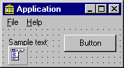
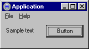
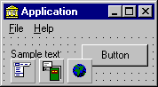
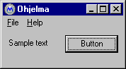
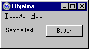
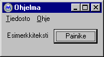

MULTILIZER uses MULTILIZER Dictionary Translator Architecture (MDTA). The basic idea of MDTA is that each form contains a translator component. It translates the form on run time to the active language. Translators use a dictionary component to get the translation strings. In most cases, all translators use the same dictionary.
Let's have an example. The following sample form contains a menu, a label, and a button. The user interface of the application is written in English. This means that the native language of the application is English.

When you run the application is looks like this:

Making the application multilingual is easy. You just add a dictionary component and a translator component to the form. The component having a green book is a dictionary component. Is specifies the dictionary that is used to translate strings. The component having Earth is a translator component. It translates the host form from the native language to the current language.

When you start a multilingual application the translator translates the host form.
 |
Translator scans all the String and TStrings typed properties of the form. If the name
of any property matches the targets properties, translator changes the value of the
property to the active language. In this case translator changes the Caption property of the form from "Application" to "Ohjelma". |
 |
After scanning the properties of the form, translator scans the sub components of the
form as well. If the name of any property matches the targets properties, translator
changes the value of the property to the active language. The first sub component is the File1 (TMenuItem) menu. Translator translates the Caption property from "&File" to "&Tiedosto". |
| The next sub component is the Help1 (TMenuItem) menu. | |
| The next sub component is the Label1 (TLabel) component. | |
 |
The last sub component is the Button1 (TButton) component. Now the translation is complete. The form is in Finnish. |
Translator changes only string typed properties. All the other properties are left intact. This makes MULTILIZER very flexible. You can change and reshape your user interface without breaking the translation any way. What's more important is the ability to extract all strings from the application to a dictionary and deploy the dictionary to a translator. The translator does not have to know anything about programming of even about the programming tool.
MULTILIZER contain a powerful tool to manager dictionaries: Language Manager.